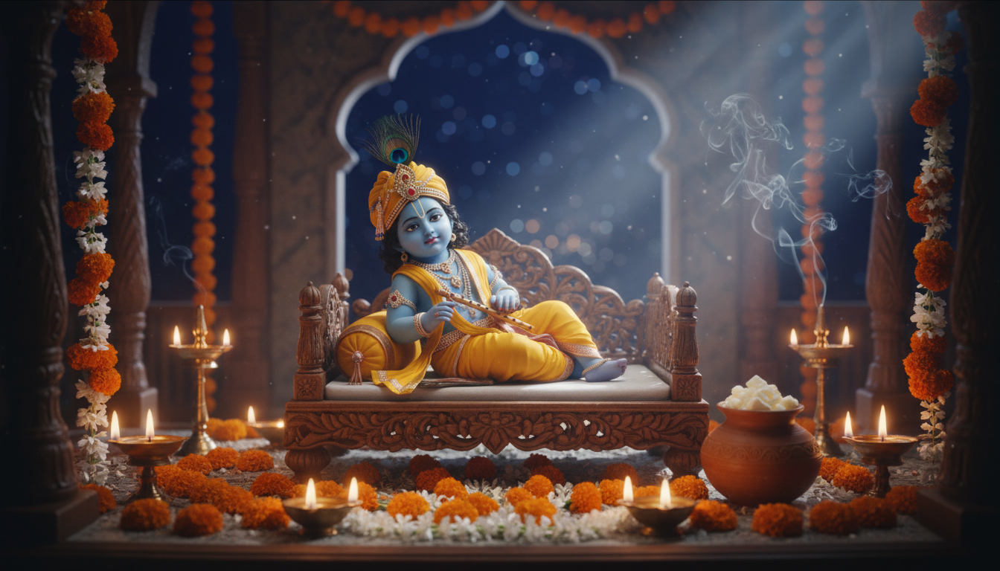

श्रीकृष्ण जन्माष्टमी केवल एक कैलेंडर की तिथि नहीं, बल्कि ब्रह्मांडीय चेतना (Cosmic Consciousness) के धरातल पर अवतरित होने का महामुहूर्त है। वैदिक दृष्टिकोण से, भगवान श्रीकृष्ण चंद्रमा (Chandra) की ऊर्जा की पूर्ण अभिव्यक्ति हैं। श्रीमद्भागवत पुराण (दशम स्कंध) के अनुसार, लीला पुरुषोत्तम का प्राकट्य उस समय हुआ जब रोहिणी नक्षत्र अपनी पूर्ण आभा में था—वही नक्षत्र जो चंद्रमा को सर्वाधिक प्रिय है और जो सौंदर्य, उर्वरता व प्रचुरता का पर्याय है।

वह दृश्य अत्यंत जीवंत है: कंस के अंधेरे कारागार में दिव्य प्रकाश पुंज का उदय, वासुदेव का नवजात कृष्ण को लेकर निकलना, कारागार की बेड़ियों का स्वतः गिर जाना और उफनती यमुना का मार्ग दे देना। यह घटना हमें सिखाती है कि जब हृदय में 'कृष्ण-चेतना' का उदय होता है, तो भौतिक बंधन और बाधाएं स्वतः ही शांत हो जाती हैं। वर्ष 2026 की जन्माष्टमी विशेष है क्योंकि इस वर्ष स्मार्त और वैष्णव (ISKCON) दोनों ही परंपराएं एक ही दिन इस उत्सव को मना रही हैं।
2026 जन्माष्टमी: महत्वपूर्ण तिथियां और शुभ मुहूर्त
वर्ष 2026 में श्रीकृष्ण जन्माष्टमी शुक्रवार, 4 सितंबर को मनाई जाएगी। यह प्रभु की 5253वीं जयंती होगी। 'दृक पंचांग' और वैदिक गणनाओं के अनुसार, मुख्य तिथियां निम्नलिखित हैं:
| विवरण | समय / तिथि (2026) |
|---|---|
| जन्माष्टमी तिथि (व्रत) | शुक्रवार, 4 सितंबर |
| निशिता पूजा समय | 11:09 PM से 11:55 PM (4 सितंबर) |
| अष्टमी तिथि आरंभ | 04 सितंबर, 02:25 AM |
| अष्टमी तिथि समाप्त | 05 सितंबर, 12:13 AM |
| रोहिणी नक्षत्र आरंभ | 04 सितंबर, 12:29 AM |
| रोहिणी नक्षत्र समाप्त | 04 सितंबर, 11:04 PM |
| पारण (आधुनिक परंपरा) | 04 सितंबर, 11:55 PM (मध्यरात्रि) के बाद |
| पारण (धर्मशास्त्रानुसार) | 05 सितंबर, 05:14 AM (सूर्योदय) के बाद |
प्रमुख शहरों में निशिता पूजा मुहूर्त (4 सितंबर की रात):
| शहर | पूजा का समय |
|---|---|
| नई दिल्ली | 11:57 PM से 12:43 AM (5 सितंबर की शुरुआत) |
| मुंबई | 12:14 AM से 01:01 AM (5 सितंबर की शुरुआत) |
| कोलकाता | 11:13 PM से 11:59 PM (4 सितंबर) |
| बेंगलुरु | 11:55 PM से 12:42 AM (5 सितंबर की शुरुआत) |
विशेष टिप्पणी: तकनीकी रूप से 12:00 AM के बाद अगला दिन लग जाता है, किंतु वैदिक पंचांग में तिथि सूर्योदय से सूर्योदय तक मानी जाती है। अतः यह पूजा 4 सितंबर की रात ही संपन्न होगी।
रोहिणी नक्षत्र: "रोहण शक्ति" और सृजन का संकल्प
रोहिणी नक्षत्र को वैदिक ज्योतिष में "समृद्ध और उर्वर क्षेत्र" माना गया है। इसके अधिपति देवता 'प्रजापति' (ब्रह्मा) हैं। रोहिणी का अर्थ है 'लाल' या 'आरोहण करने वाली'।
- रोहण शक्ति (Power to Rise): रोहिणी के पास किसी भी बीज या विचार को विकसित करने की अद्भुत शक्ति है। इसीलिए इसे "इच्छाओं का भौतिक रूप लेने का क्षेत्र" कहा जाता है। कृष्ण के जन्म के लिए रोहिणी का चयन यह दर्शाता है कि वे दिव्य प्रेम को पृथ्वी पर 'मूर्त' रूप देने आए थे।
- ग्रहों का प्रवर्धन (Amplification): 'भृगु नंदी नाड़ी' के अनुसार, रोहिणी में स्थित ग्रह के कारकत्व (Significations) बढ़ जाते हैं। कृष्ण 'आनंद' और 'प्रेम' के कारक हैं, और रोहिणी नक्षत्र ने उस आनंद को एक विराट विस्तार दिया।
- प्रतीकवाद: रोहिणी के प्रतीकों में 'रथ' (शक्तिशाली यात्रा), 'बरगद का पेड़' (स्थिरता) और 'अंकुर' (नई शुरुआत) शामिल हैं। यह नक्षत्र हमें धैर्य और निरंतर विकास की प्रेरणा देता है।
व्रत और अनुष्ठान: शुद्धि की चेकलिस्ट
जन्माष्टमी व्रत का उद्देश्य शरीर और मन को सात्विक बनाना है। इसके नियम एकादशी व्रत के समान ही कठोर होते हैं।
पारण के नियम: जो भक्त दो दिन का व्रत नहीं रख सकते, वे धर्मसिंधु के अनुसार अगले दिन सूर्योदय के बाद पारण कर सकते हैं।
व्रत आहार चेकलिस्ट:
- क्या ग्रहण करें: फल, डेयरी (दूध, दही, पनीर), साबूदाना, कुट्टू, सिंघाड़े का आटा, मेवे और ताज़ा माखन।
- क्या वर्जित है: किसी भी प्रकार का अनाज (चावल, गेहूं, दालें) और तामसिक भोजन।
षोडशोपचार पूजा: मध्यरात्रि में भगवान का 16 चरणों में पूजन करें, जिसमें पंचामृत अभिषेक और नए पीले वस्त्र धारण कराना प्रमुख है। दही हांडी का मुख्य उत्सव अगले दिन 5 सितंबर 2026 को मनाया जाएगा।
ज्योतिषीय अंतर्दृष्टि: शुक्र, चंद्रमा और सात्विक काउंसलिंग
वैदिक ज्योतिष में चंद्रमा 'मन' है और शुक्र (Shukra) 'इच्छा और सुंदरता' का स्वामी।
- चंद्रमा और मानसिक स्वास्थ्य: चंद्रमा कमजोर होने पर भावनात्मक अस्थिरता और अनिद्रा जैसे लक्षण दिखते हैं। इसके उपचार हेतु 'महामृत्युंजय मंत्र' और शिव पूजा सर्वोत्तम है, क्योंकि शिव चंद्रमा को मस्तक पर धारण करते हैं।
- शुक्र के कार्मिक सबक: शुक्र केवल विलासिता नहीं है। इसके उच्च स्तर पर 'संयम' और 'आध्यात्मिक इच्छाएं' आती हैं। शुक्र का कार्मिक संदेश है—अपनी भौतिक इच्छाओं का आध्यात्मिकीकरण (Spiritualize) करना। भोग को योग में बदलना ही शुक्र की सच्ची विजय है।
- सात्विक/धार्मिक काउंसलिंग: आधुनिक मनोविज्ञान अक्सर केवल लक्षणों का उपचार करता है, जबकि 'सात्विक काउंसलिंग' (Vedic Counseling) संस्कारों और संचित कर्मों की गहरी परतों पर काम करती है। यह शरीर, मन और आत्मा के बीच के असंतुलन को पहचानकर 'स्व-ज्ञान' के माध्यम से उपचार करती है।
हरे कृष्ण कीर्तन: ध्वनि विज्ञान और न्यूरोप्लास्टिसिटी
कीर्तन 'भक्ति योग' की सबसे सरल और वैज्ञानिक विधि है। 'महामंत्र' की ध्वनि तरंगें सीधे हमारी चेतना को स्पर्श करती हैं।
महामंत्र: हरे कृष्ण, हरे कृष्ण, कृष्ण कृष्ण, हरे हरे | हरे राम, हरे राम, राम राम, हरे हरे ||
कीर्तन के वैज्ञानिक और शोध-आधारित लाभ (ISKCON Research):
- Vagus Nerve सक्रियण: कीर्तन का सस्वर पाठ वैगस नर्व को उत्तेजित करता है, जिससे हृदय गति नियंत्रित होती है और तनाव कम होता है।
- Cortisol में कमी: यह तनाव पैदा करने वाले हार्मोन कोर्टिसोल के स्तर को प्रभावी ढंग से घटाता है।
- Neuroplasticity: मंत्रों का निरंतर जप मस्तिष्क के उन हिस्सों को पुनः सक्रिय (Rewire) करता है जो ध्यान और स्मृति (Memory) से जुड़े हैं।
- प्राकृतिक किलर सेल्स (Natural Killer Cells): शोध दर्शाते हैं कि कीर्तन शरीर में रोगों से लड़ने वाली कोशिकाओं की सक्रियता बढ़ाकर प्रतिरक्षा प्रणाली (Immunity) को मज़बूत करता है।
अभ्यास के सूत्र: घर पर 10-15 मिनट जप माला (108 मोती) के साथ एकांत में जप करें। शब्दों के उच्चारण को ध्यानपूर्वक सुनना ही सबसे बड़ी साधना है।
निष्कर्ष और मुख्य व्यावहारिक सीख
जन्माष्टमी हमें अधर्म के विनाश और धर्म की स्थापना का शाश्वत संदेश देती है। इस पावन अवसर पर हमारे जीवन के लिए 5 मुख्य सूत्र ये हैं:
- इच्छाओं का शुद्धिकरण: अपनी ऊर्जा को रोहिणी नक्षत्र की तरह सकारात्मक सृजन में लगाएं।
- सात्विक जीवन: आहार और विचारों की शुद्धि से ही जीवन में 'कृष्ण' (आकर्षण) का जन्म होगा।
- ध्वनि का आश्रय: मानसिक शांति के लिए प्रतिदिन कीर्तन या जप को अपनी दिनचर्या का हिस्सा बनाएं।
- कार्मिक संतुलन: भौतिक सुखों का आनंद लें, किंतु शुक्र के कार्मिक सबक को याद रखते हुए उनमें आसक्त न हों।
- कृतज्ञता (Gratitude): जो प्राप्त है, उसे ईश्वर का प्रसाद मानकर साझा करें।
प्रभु श्रीकृष्ण आपके जीवन को प्रेम, प्रचुरता और आध्यात्मिक आनंद से भर दें।
शुभ जन्माष्टमी!
Sources
- 2026 Krishna Janmashtami, Gokulashtami Puja Date and Fasting Time for Clayton, North Carolina, United States - Drik Panchang
- 2026 Krishna Janmashtami, Gokulashtami Puja Date and Fasting Time for Falakata, West Bengal, India - Drik Panchang
- Janmashtami 2026: Krishnas Birthday Date, Vrat & Rituals | AstroSight
- Rohini Nakshatra in Vedic Astrology | Vedicgrace Institute of Astrology
- Vedic Counseling - A Holistic Approach to Mental Health - the meraki method
- Remedies for Weak Moon in Chart: Complete Vedic Guide | AstroSight
- Introducing: Jiva Vedic Psychology - Jiva Institute of Vedic Studies
- About Venus (Shukra Graha) Planet in Astrology and Remedies
- 7 Krishna Mantras for Devotion & Peace | Swami Mukundananda
- The Power of the Hare Krishna Maha Mantra: Awakening Spiritual Bliss - Harishyam Arts
- Santhana Gopala Mantra & Puja for Child Conception | ePuja
- The Transformative Power of Hare Krishna Kirtan | Complete Guide to Devotional Chanting
- Moon in Rohini Nakshatra: Powerful Effects on Taurus, Cancer, Virgo & Pisces - Astropatri
- Shri Krishna Janmashtami 2026 Date and Time - Anytime Astro
- Exploring the Therapeutic Potential of Yoga Philosophy: A Perspective on the Need for Yoga-Based Counselling Program (YBCP) in Common Mental Disorders - PMC
- Indian Counselling Approaches Explained | PDF | Mindfulness | Psychology - Scribd
- Janmashtami Vrat 2025: Date, puja muhurat, fasting rules, dos and don'ts, rituals & significance - The Economic Times
- Jiva Vedic Psychology
- Evolution of Counselling in India | PDF | Ayurveda | Psychotherapy - Scribd
- Becoming Fearless - Radha Krishna Temple of Dallas
- Rohini Nakshatra – Meaning, Traits & Significance
- Learning from the Great Bhaktas: Radha - Blog | Bhakti Marga
- Hare Krishna Maha Mantra: Significance and benefits of chanting "Hare Krishna Maha Mantra" - The Times of India
- Benefits of Krishna Mantra - Astrotalk
- 7 Most Powerful Krishna Mantras to Bring Peace and Prosperity - Svastika
- Venus (Shukra) in Different Houses – Detailed Explanation with Simple Remedies - Reddit
- Venus Malefic Effects (शुक्र ग्रह दोष) | Free Shukra Remedies - Astro Mantra
- Vedic Remedies for Sukra Graha | Online Astrology Services USA - Dixith INC
- How to Make Your Venus Strong in Astrology - Navratan
- Venus in Vedic Astrology: Love & Remedies | PDF | Contentment | Happiness - Scribd
- Venus Remedies for Relationship Karma | PDF | Love | Marriage - Scribd
- Remedial Measures for planet Venus as per Lal Kitab - Rudraksha Center
- Remedies of planet Venus as per Vedic Astrology - Rudraksha Center
- What are The States of Mind | Dr. Satyanarayana Dasa Ji - Jiva Vedic Psychology - YouTube
- What is Vedic Psychology? | Dr. Satyanarayana Dasa Ji - YouTube
- RADHA KRISHNA MANTRA | ABSOLUTE LOVE AND DEVOTION, HAPPINESS,INNER PEACE - YouTube
- Santana Gopala Mantra Miracle for Child Blessings - YouTube
- Krishna Janmashtami 2023: History, significance and celebration - India Today
- Vyasa Puja of Srila Prabhupada | ISKCON Navi Mumbai, at Kharghar | ISKCON Navi Mumbai. Official website of ISKCON at Kharghar, Navi Mumbai
- Srila Prabhupada Appearance Day - Mumbai - ISKCON Juhu
- B.P. Janardan Maharaj :: Seva Ashram News of the Vaishnava Seva Society
- Benefits of Hare Krishna Mantra - ISKCON Bangalore
- Indian Practices for Culturally Relevant E-Mental Health Care for Adolescents - Ijisrt.Com
- Drik Panchang - online Hindu Almanac and Calendar with Planetary Ephemeris based on Vedic Astrology.
- Jiva Institute of Vedic Studies
- Gauḍīya Calendar 2025-2026 Overview | PDF | Indian Religions - Scribd
- Weak Venus? Remedies to restore love and relationship balance | - The Times of India
- Bhagavadgita and psychotherapy | Request PDF - ResearchGate
- 2026 Krishna Janmashtami, Gokulashtami Puja Date and Fasting Time for Suitland-Silver Hill, Maryland, United States - Drik Panchang
- Janmatithi – Celebrate your birthday with the Gods. Birthdays of Indian gods and saints are celebrated as per Indian Calendar. Find yours!
- A Rare Vrindavan Leela of Radha Krishna – The Power of Guru's Grace | Swami Mukundananda - YouTube
- June New Moon 2026: Astrological impact of the Super New Moon in Rohini Nakshatra
- Jiva Institute of Vedic Studies - YouTube
- Nigamananda Paramahansa - Wikipedia
- Stress, Anxiety & Fear | JIVA Institute Vrindavan - Dr Satyanarayana Das Babaji - YouTube
- Proper use of Human Life, Karma, Devotion | JIVA Institute Vrindavan - Dr Satyanarayana Das Babaji - YouTube
- 7 Effective remedies to please Shukra (Venus) and improve your fortune - The Times of India
- (Shukra) Venus in Vedic Astrology: The Planet of Desire, Dharma, and Divine Pleasure
- 15 Benefits of Chanting Hare Krishna Mahamantra - The Gaudiya Treasures of Bengal
- Connection Between Food & Mind | Dr. Satyanarayana Dasa Ji - Jiva Vedic Psychology
- Krishna Mantra | puja.today
- Janmashtami 2023: Date, history, significance, celebration of Lord Krishna's birth, and more about Krishna Janmashtami | Hindustan Times
- Sacred Rituals & Devotion of India by Dharmikvibes - Substack
- Janmashtami 2023: Shubh muhurat, citywise timings, puja samagri, traditions and all you need to know about the festival
- Vaishnava Calendar 2026-2027 | SCSMath International
- Janmashtami in Vrindavan 2026 – Complete Festival Travel Guide
- ISKCON Dwarka: ISKCON Temple in Delhi | Cultural & Spiritual Temple
- Krishna Janmashtami 2025: Date, auspicious puja time, city-wise schedules and rituals for devotees